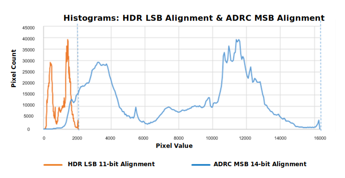
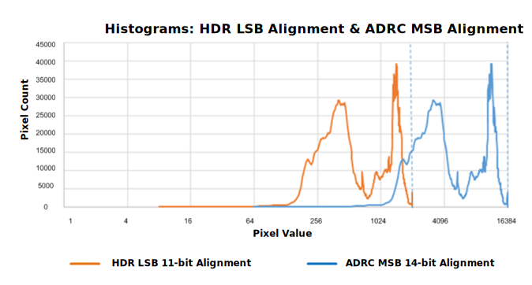

The scope of AEC for HDR is to determine two exposures: Long exposure, comprising long exposure time and long gains, and short exposure, comprising short exposure time and short gain. The ratio of long and short exposure is known as the sensitivity ratio. The valid range for the sensitivity ratio is [1.0 max_drc_gain].
AEC HDR tuning is limited to ensuring that AEC properly calculates the long and short exposures. Low contrast scenes (e.g., wall, white board) should result in a sensitivity ratio as low as 1 (i.e., long and short exposures are identical). High dynamic range scenes (e.g., backlight, outdoors and indoors scene) will yield a maximal sensitivity ratio.
AEC is not responsible for fusing the long and short pixel values into the final image. Also, tone mapping should be carefully tuned together with AEC to achieve the optimal balance of exposure and contrast.
| ADRC calculations | HDR exposures |
|---|---|
| Exposure | Short exposure |
| Exposure * ADRC gain | Long exposure |
Preliminary knowledge and tuning of Histogram AEC and ADRC is required. Please refer to the appropriate section of this document for tuning Histogram AEC and ADRC.
A difference between HDR and ADRC is the way the data is aligned in the image pipe. In HDR, the short and long exposure data is either LSB-aligned or MSB-aligned (HDR LSB alignment was implemented first and HDR MSB alignment is currently being proposed). ADRC always uses MSB alignment.
LSB alignment example:
Assuming a 10-bit sensor data and a sensitivity ratio of 2, short exposure data will be aligned with long exposure data by multiplying short exposure pixel values by 2. This results in data alignment on 11 bits.
MSB alignment requires further aligning data to the full bit depth of the image data pipe, i.e., 14 bits.
Careful consideration of the histograms under LSB alignment and MSB alignment strategies reveals that those two methods can be made strictly identical from the AEC standpoint. This is apparent when looking at histogram data using a log2 scale.


Histogram AEC can easily scale statistics data and ensure the outcome of ADRC calculations transfers correctly to the HDR case, resulting in HDR and ADRC calculations being identical.
The HDR long/short sensitivity ratio is the same quantity as ADRC gain. The maximum sensitivity ratio is controlled by max_drc_gain. This value must be within the [1 16] range.
All histogram AEC parameters will impact HDR tuning. Start tuning using the default values and proceed carefully, following histogram tuning instructions.
If possible, it is preferable to have the HDR long exposure be a little bit larger than to non-HDR, non-ADRC exposure. This is because the HDR short exposure can compensate for clipped highlights. To achieve a brighter image, it is recommended to tune the bright region parameter bright_weight for HDR, where slightly decreasing that parameter will slightly increase brightness.
The bright_weight parameter controls the weight applied to bright regions of the image. When it is larger than 1.0, it acts as a saturation prevention mechanism by making the bright highlights (values larger than bright_region_thres) count more. A value smaller than 1.0 acts as a saturation discard mechanism. It is recommended to proceed carefully when tuning the bright_weight parameter, and extensively test scenes with HDR.